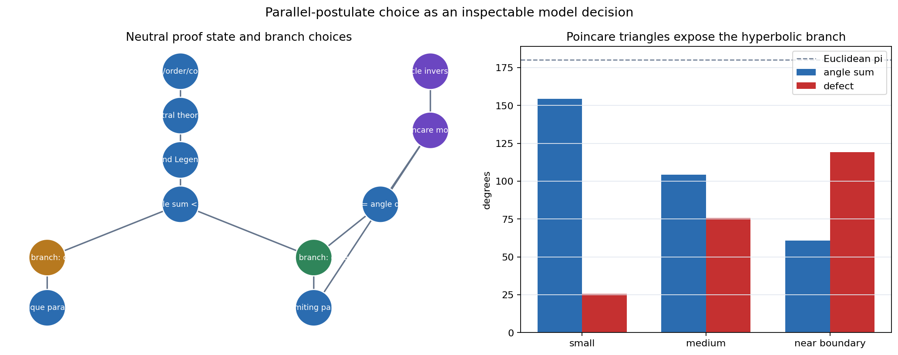
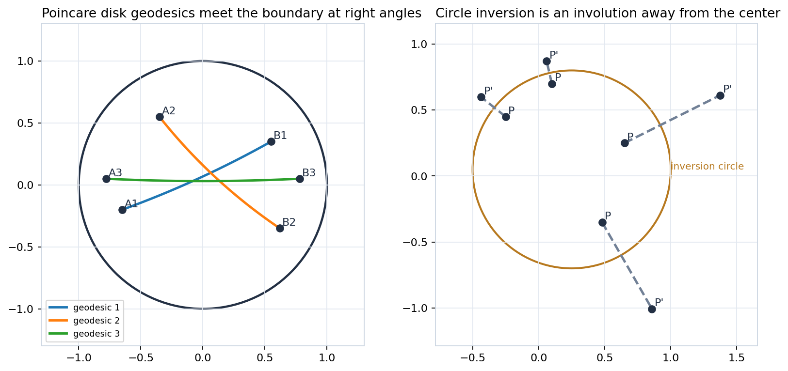
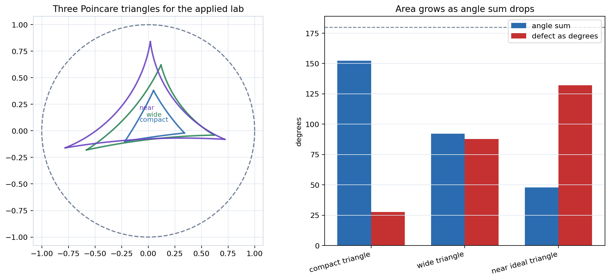

From the parallel decision to Poincare geodesics, ends, angle defect, and hyperbolic trigonometry.
Notebook. Euclid-and-Beyond/chapter-07-non-euclidean-geometry/07-non-euclidean-geometry.ipynb
Source span. Printed pages 295-434; PDF pages 307-446.
How can a plane reject unique parallels while retaining lines, congruence, distance, angle, area, and triangle identities?
Represent the branch choice, then check model invariants: orthogonal geodesic circles, Cayley agreement, distance laws, and defect-as-area.
Incidence, order, congruence, and many triangle arguments remain available without selecting unique parallels.
Euclidean geometry has one parallel through an exterior point; hyperbolic geometry has limiting directions and a positive triangle defect.

The graph separates conclusions available in neutral geometry from claims that require a Euclidean or hyperbolic parallel assumption.
Notebook samples record a minimum positive hyperbolic defect near 0.448, while Euclidean comparison remains the zero-defect branch.
The operation is its own inverse, so reciprocal points on a ray swap positions predictably.
Circles orthogonal to the boundary inversion circle are preserved as sets; these become the visible carriers of disk geodesics.
A disk geodesic is either a diameter or an arc of a circle whose support meets the unit boundary at right angles.
The arc may bow strongly in the Euclidean picture, but its boundary orthogonality is the invariant to check.

Disk arcs become half-plane semicircles or vertical rays, but geodesic incidence and distances agree after transformation.
Cayley roundtrip error is about 3.14 × 10-16; distance disagreement is about 2.22 × 10-16.
A half-plane geodesic is determined by either a pair of finite endpoints or a finite endpoint plus infinity.
The notebook check records vertical distance log error near 2.22 × 10-16.
If a point is hyperbolic distance d from a line, the limiting parallel angle satisfies:
Near the line the cone is wide; far from the line the limiting directions compress toward the perpendicular.
The denominator explains why approaching the ideal boundary costs infinite hyperbolic distance.

Angles are measured conformally in the disk, while side lengths use the hyperbolic metric.
Compact, wide, and near-ideal triangles have decreasing angle sums and increasing positive defects.
The formula is the hyperbolic replacement for the Euclidean square-sum identity.
For the sampled right triangle, the pythagorean residual is 4.44 × 10-16, and the sine-rule residual is zero.
Uses incidence, betweenness, congruence, and order without selecting a unique-parallel rule.
Unique parallels and zero triangle defect become available only after the Euclidean postulate is selected.
Limiting parallels, positive defect, orthogonal-circle geodesics, and hyperbolic trig replace Euclidean expectations.
If a vertex leaves the disk, the model assumptions fail before any theorem check has meaningful content.
Involution error and reciprocal-radius product error are both zero in the chapter checks.
Boundary orthogonality residuals stay below 10-13 for sampled arcs.
Cayley roundtrip and distance errors are at floating-point scale, about 10-16.
Area defects are positive and hyperbolic cosine-law residuals remain near machine precision.
The checks are teaching instruments: they make hypotheses inspectable and reveal model failures quickly, while the theorems still carry the general mathematical guarantee.
Neutral geometry delays the parallel decision so shared consequences remain visible.
Inversion and Poincare models make hyperbolic lines, distances, and ends concrete.
Angle defect, area, and hyperbolic trigonometry turn the new branch into a coherent calculus.
When a Euclidean-looking diagram in the disk gives a false intuition, which quantity should be checked first: boundary orthogonality, hyperbolic distance, tangent angle, or angle defect?